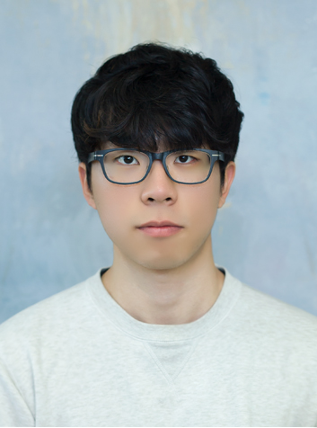
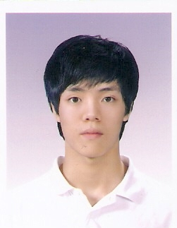
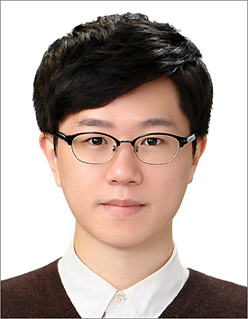
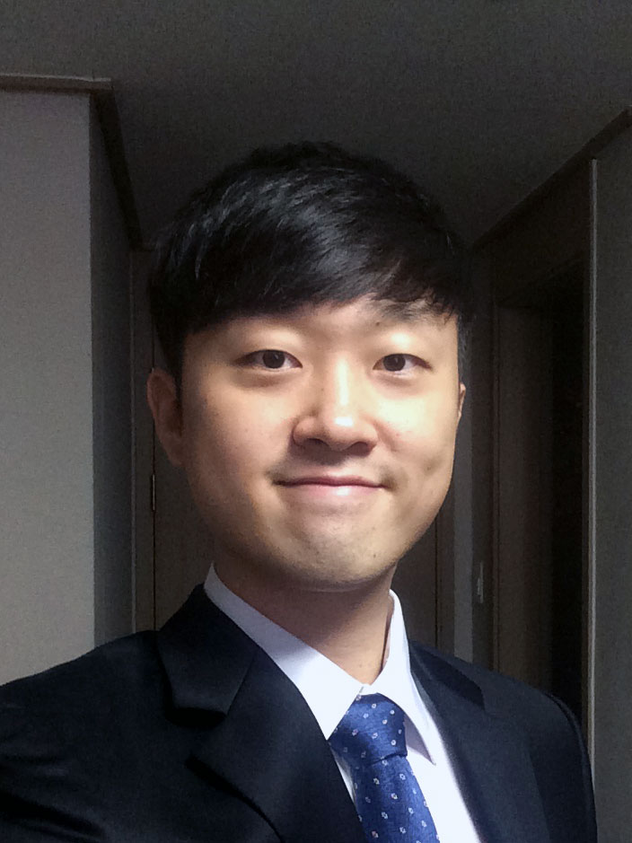

Ph.D. [PhD 14] JinHyeok Oh (2019.3 ~ 2024.8)
[PhD 13] Dongyoung Lee (2018.3 ~ 2024.2)
[PhD 12] Junsoo Kim (2017.3 ~ 2023.2)
[PhD 11] Jihoon Kim (2014.3 ~ 2023.2)
B.S. in Mechanical Engineering, UNIST, 2014.2. Ph.D. in Mechanical Engineering, UNIST, 2023.2. Ph.D. Dissertation Title: Vision Based Locomotion Algorithms of a Quadruped Robot to Traverse Complex Terrains Currently at Hyundai Motor Company [PhD 10] Minhyuk Lee (2016.3 ~ 2022.8)

B.S. in Mechanical Engineering, UNIST, 2016.2. Ph.D. in Mechanical Engineering, UNIST, 2022.8. Ph.D. Dissertation Title: Deep learning based real-time gesture recognition and sign language translation Currently at Hyundai Motor Company Recipient of the Global Ph.D. Fellowship (GPF), 2017.3~2022.2 [PhD 9] Hoyeon Yeom (2015.9 ~ 2022.8)

B.S. in Mechanical Engineering, UNIST, 2015.8. Ph.D. in Mechanical Engineering, UNIST, 2022.8. Ph.D. Dissertation Title: Design and Control of a Quadruped Robot for High Mobility Currently at LG Electronics Recipient of the Global Ph.D. Fellowship (GPF), 2016.9~2021.8 [PhD 8] Sungman Park (2015.3 ~ 2022.2)
[PhD 7] Wookeun Park (2016.3 ~ 2021.8)
B.S. in Mechanical Engineering, UNIST, 2016.2. Ph.D. in Mechanical Engineering, UNIST, 2021.8. Ph.D. Dissertation Title: Hybrid Pneumatic Actuation Mechanisms Combining Soft and Rigid Materials for Robotic Applications Currently at Hyundai Motor Company Feel the Same, Inc. Recipient of the Global Ph.D. Fellowship (GPF), 2017.3~2021.8 [PhD 6] Bokeon Kwak (2015.9 ~ 2021.8)
[PhD 5] Jeongsoo Lee (2014.9 ~ 2021.2)
[PhD 4] Yeongyu Park (2014.3 ~ 2020.2)
B.S. in Mechanical Engineering, UNIST, 2014.2. Ph.D. in Mechanical Engineering, UNIST, 2020.2. Ph.D. Dissertation Title: Wearable Systems for the Hand with High Functionality and Usability for Virtual Reality Currently at Korea Shipbuilding & Offshore Engineering (KSOE) Recipient of the Nine Bridge Fellowship, 2015.9~2018.8 [PhD 3] Inseong Jo (2013.3 ~ 2019.8)
[PhD 2] Suin Kim (2014.3 ~ 2019.2)
B.S. in Mechanical Engineering, Inha University, 2014.2. Ph.D. in Mechanical Engineering, UNIST, 2019.2. Ph.D. Dissertation Title: Mechatronic Implementations of Wearable Robots for Physical Interaction: From Rigid to Soft Robotics (Best Ph.D. Thesis Award from the Department of Mechanical Engineering, UNIST) Currently at Hyundai Motor Company Feel the Same, Inc. Recipient of the Global Ph.D. Fellowship (GPF), 2014.3~2019.2. [PhD 1] Yeongtae Jung (2013.3 ~ 2019.2)
M.S. [MS 20] Heejin Yu (2023.3 ~ 2025.8)
B.S. in Mechanical Engineering, UNIST, 2023.2. M.S. in Mechanical Engineering, UNIST, 2025.8. M.S. Thesis Title: A Flexible Tactile Actuator With Integrated Electroosmotic Pumps for Wearable Haptic Systems [MS 19] Dawon Ju (2021.3 ~ 2024.2)
B.S. in Human Intelligence and Robot Engineering, Sangmyung University, 2021.2. M.S. in Mechanical Engineering, UNIST, 2024.2. M.S. Thesis Title: Intention Estimation of Pick-and-Place Actions using Gaze and Motion Features for Human-Robot Interaction Currently at LG Electronics [MS 18] Gunoo Park (2021.3 ~ 2024.2)
B.S. in Mechanical Engineering, Korea University, 2021.2. M.S. in Mechanical Engineering, UNIST, 2024.2. M.S. Thesis Title: Constrained State Estimation of Quadrupedal Robots under Sliding Contact [MS 17] Hayeon Kim (2021.3 ~ 2023.2)
B.S. in Mechanical Engineering, Korea Aerospace University, 2021.2. M.S. in Mechanical Engineering, UNIST, 2023.2. M.S. Thesis Title: A Stretchable Thermoelectric Device based on Direct Ink Writing of Liquid Metal and Multi-Layer Lamination Currently at KIST [MS 16] Dongman Lee (2020.9 ~ 2023.2)
B.S. in Mechanical Engineering, UNIST, 2020.8. M.S. in Mechanical Engineering, UNIST, 2023.2. M.S. Thesis Title: Highly Stretchable and Reconfigurable Layer Jamming Sheets using Kirigami Patterns Currently at LG Electronics [MS 15] Hun Jang (2020.9 ~ 2023.2)
B.S. in Aerospace and Mechanical Engineering, Korea Aerospace University, 2020.8. M.S. in Mechanical Engineering, UNIST, 2023.2. M.S. Thesis Title: Direct Ink Writing of Silicone with Liquid Metal for a Triboelectric Tactile Sensor Currently Ph.D. student at Max Planck Institute Previously internship at AIRO Fraunhofer IPK [MS 14] Soyoung Choi (2020.9 ~ 2023.2)
[MS 13] Jiyeon Maeng (2020.3 ~ 2022.8)
B.S. in Mechanical Engineering, UNIST, 2018.2. M.S. in Mechanical Engineering, UNIST, 2022.8. M.S. Thesis Title: Geometric Gait Analysis of Corkscrew Swimmers at Low Reynolds Regime Currently Ph.D. student at Georgia Institute of Technology [MS 12] Juri Kim (2020.3 ~ 2022.8)
[MS 11] Sangyeop Lee (2019.3 ~ 2022.8)
B.S. in Mechanical Engineering, UNIST, 2019.2. M.S. in Mechanical Engineering, UNIST, 2022.8. M.S. Thesis Title: An Augmented Reality (AR) based Operating System with a Haptic Glove for Intuitive and Convenient Robot Arm Programming Currently at his own business [MS 10] Jihye Oh (2020.3 ~ 2022.2)
B.S. in Mechanical Engineering, UNIST, 2020.3. M.S. in Mechanical Engineering, UNIST, 2022.2. M.S. Thesis Title: A Direct Ink Writing Based Fabric-Embedded Soft Sensor for Improved Durability and Sewability Currently at LG Electronics [MS 9] Kyeongtaek Kim (2020.3 ~ 2022.2)
[MS 8] Heeyeop Kim (2018.9 ~ 2021.8)
B.S. in Mechanical Engineering, Inha University, 2017.8. M.S. in Mechanical Engineering, UNIST, 2021.8. M.S. Thesis Title: Analysis on Resistance Changes in Liquid Metal Printed Wires under Strain for Stretchable Applications Currently at Hyundai Motor Company [MS 7] Jeongsoon Hong (2018.9 ~ 2021.2)
B.S. in Mechanical Engineering, UNIST, 2018.8. M.S. in Mechanical Engineering, UNIST, 2021.2. M.S. Thesis Title: Optimization of Soft Sensor Locations in Dorsum of the Hand for Finger 3D Motion Measurement Currently at LG Electronics [MS 6] Sungmin Seo (2018.3 ~ 2020.2)
B.S. in Mechanical Engineering, UNIST, 2018.2. M.S. in Mechanical Engineering, UNIST, 2020.2. M.S. Thesis Title: Origami-based Hybrid Actuating Modules for Upper Limb Support Currently Ph.D. student at Purdue University Livsmed (for military service) [MS 5] Dahee Jeong (2017.9 ~ 2019.8)
B.S. in Mechanical Engineering and Global Financing & Banking, Inha University, 2014.8. M.S. in Mechanical Engineering, UNIST, 2019.8. M.S. Thesis Title: Improvement and Verification of Reliability in Conductive Liquid Metal based Soft Sensors Currently at Feel the Same, Inc. LG Electronics , 2014.9~2017.6[MS 4] Kyutaek Han (2017.3 ~ 2019.8)

B.S. in Mechanical System Design Engineering, Seoul National University of Science and Technology, 2016.2. M.S. in Mechanical Engineering, UNIST, 2019.8. M.S. Thesis Title: Kinematic Analysis and Experimental Verification of a Wearable Haptic Interface for a Tele-operated Robot Currently at Hyundai Motor Company Korea Culture Technology Institute (for military service) [MS 3] Hyeonjun Kim (2017.3 ~ 2019.2)
[MS 2] Hyunkyu Park (2016.3 ~ 2018.2)
B.S. in Computer Engineering, UNIST, 2016.2. M.S. in Mechanical Engineering, UNIST, 2018.2. M.S. Thesis Title: Kinematic Analysis and Path Planning Algorithms of a Quadruped Robot with Redundant DOFs for Adaptation on Complex Environment Currently at Hyundai Motor Company LG Electronics [MS 1] Kyungkwan Noh (2015.3 ~ 2017.8)

B.S. in Mechanical Engineering, UNIST, 2015.3. M.S. in Mechanical Engineering, UNIST, 2017.8. M.S. Thesis Title: Wearable Sensor Systems for Human Motion Measurement Currently at RECENS Medical (for military service) ![[PhD 14] JinHyeok Oh (2019.3 ~ 2024.8)](images/JinHyeok Oh.jpg)
![[PhD 13] Dongyoung Lee (2018.3 ~ 2024.2)](images/Dongyoung Lee.jpg)
![[PhD 12] Junsoo Kim (2017.3 ~ 2023.2)](images/JoonsooKim.jpg)
![[PhD 11] Jihoon Kim (2014.3 ~ 2023.2)](images/Jihoon Kim.jpg)
![[PhD 8] Sungman Park (2015.3 ~ 2022.2)](images/S_Park.jpg)
![[PhD 7] Wookeun Park (2016.3 ~ 2021.8)](images/Wookeun Park.jpg)
![[PhD 6] Bokeon Kwak (2015.9 ~ 2021.8)](images/Bokeon Kwak.jpeg)
![[PhD 5] Jeongsoo Lee (2014.9 ~ 2021.2)](images/J_Lee.jpg)
![[PhD 4] Yeongyu Park (2014.3 ~ 2020.2)](images/Yeongyu Park.jpg)
![[PhD 2] Suin Kim (2014.3 ~ 2019.2)](images/Suin Kim.jpg)
![[MS 20] Heejin Yu (2023.3 ~ 2025.8)](images/Heejin Yu.jpg)
![[MS 19] Dawon Ju (2021.3 ~ 2024.2)](images/Dawon Ju.jpg)
![[MS 18] Gunoo Park (2021.3 ~ 2024.2)](images/Gunoo Park.jpg)
![[MS 17] Hayeon Kim (2021.3 ~ 2023.2)](images/Hayeon Kim.jpg)
![[MS 16] Dongman Lee (2020.9 ~ 2023.2)](images/Dongman Lee.jpg)
![[MS 15] Hun Jang (2020.9 ~ 2023.2)](images/Hun Jang.jpg)
![[MS 14] Soyoung Choi (2020.9 ~ 2023.2)](images/Soyoung Choi.jpg)
![[MS 13] Jiyeon Maeng (2020.3 ~ 2022.8)](images/Jiyeon Maeng.png)
![[MS 12] Juri Kim (2020.3 ~ 2022.8)](images/Juri Kim.jpg)
![[MS 11] Sangyeop Lee (2019.3 ~ 2022.8)](images/Sangyeop Lee.png)
![[MS 10] Jihye Oh (2020.3 ~ 2022.2)](images/Jihye Oh.jpg)
![[MS 9] Kyeongtaek Kim (2020.3 ~ 2022.2)](images/Kyeongtaek Kim_grad.png)
![[MS 8] Heeyeop Kim (2018.9 ~ 2021.8)](images/Hee Yeop Kim.jpg)
![[MS 7] Jeongsoon Hong (2018.9 ~ 2021.2)](images/Jungsoon Hong.jpg)
![[MS 6] Sungmin Seo (2018.3 ~ 2020.2)](images/Sungmin Seo.png)
![[MS 5] Dahee Jeong (2017.9 ~ 2019.8)](images/Dahee Jeong.jpg)